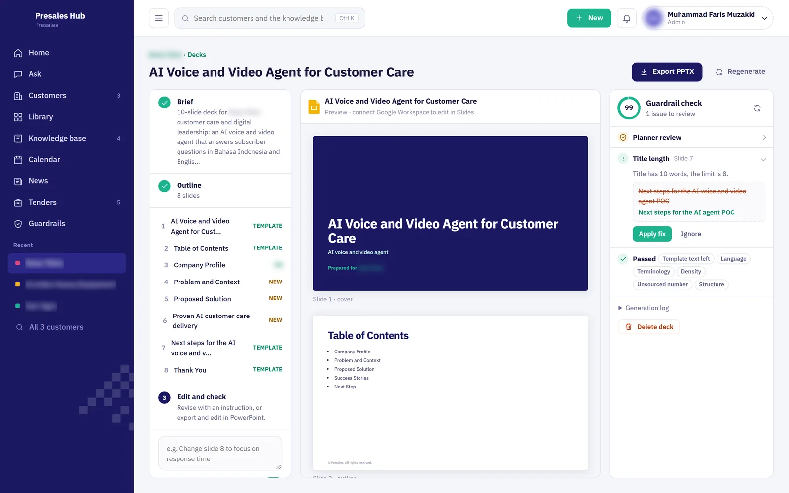
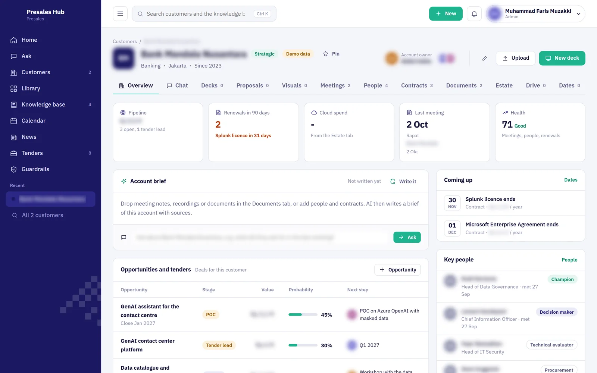
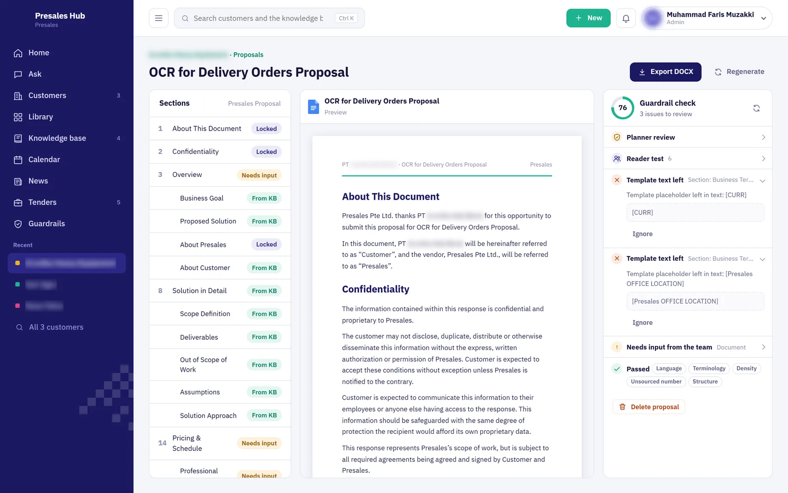
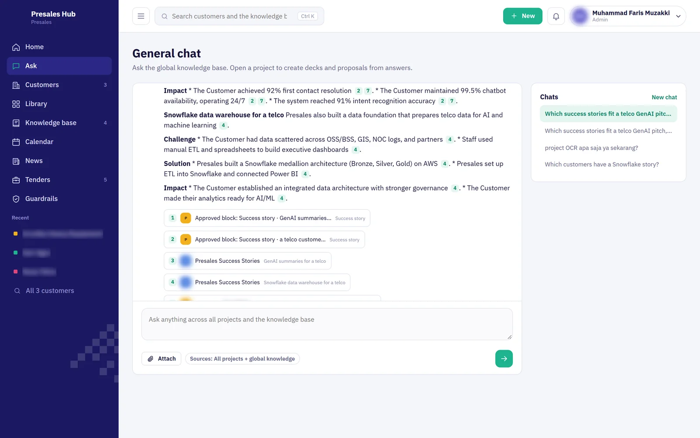
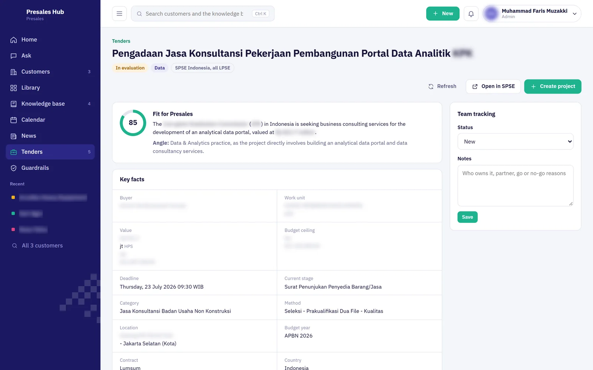
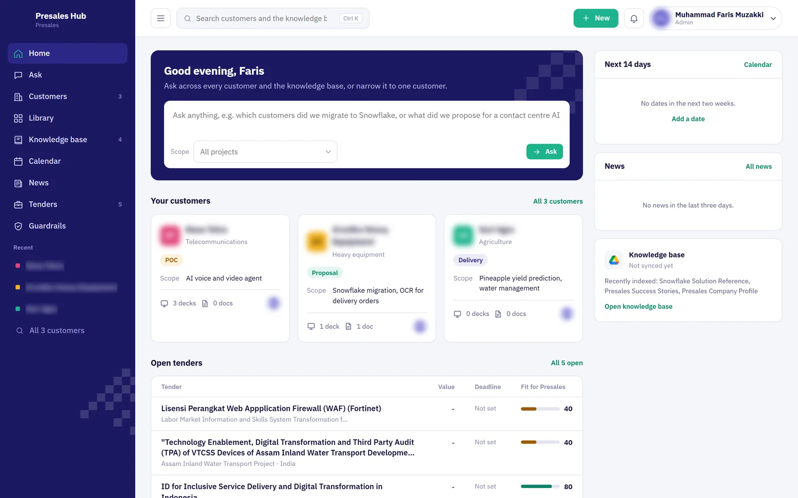
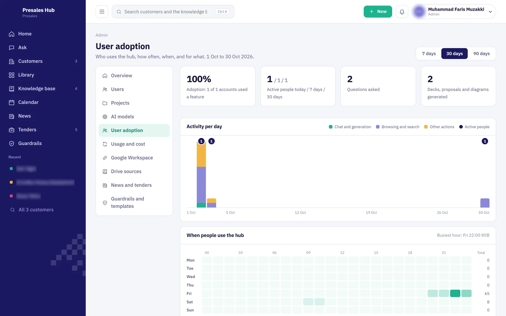
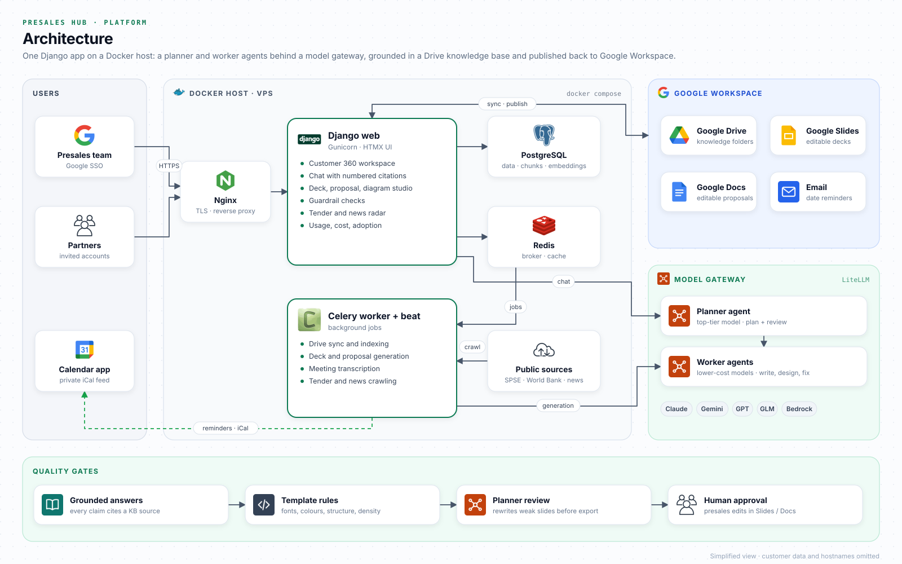

Customer 360
Pipeline, renewals, key people, contracts, meetings and a health score per customer. Meeting recordings and notes are transcribed and turned into an account brief with sources.
Agentic AI · Generative documents · Sales enablement
An agentic AI workspace for a presales team: every customer in one place, answers that cite the company’s own knowledge base, and decks and proposals written by a planner agent and worker agents, then published to Google Slides and Docs for people to finish.

01 / THE CONTEXT
A presales team answers many customers at once. The material they need, past proposals, success stories, solution references and the official templates, sits in shared drives. Every new deck starts from copying old slides, every proposal repeats the same sections, and customer context lives in chats and meeting notes that are hard to find again.
I built one workspace where each customer has its own space for chat, decks, proposals, diagrams, files, people, contracts and important dates. The knowledge base syncs from Google Drive and every answer cites its source. A planner agent drafts and reviews the documents while cheaper worker agents do the writing, and the result lands in Google Slides or Docs, ready for a person to edit.
02 / THE PRODUCT
Pipeline, renewals, key people, contracts, meetings and a health score per customer. Meeting recordings and notes are transcribed and turned into an account brief with sources.
Chat across all customers or inside one. Retrieval combines keyword and embedding search over Drive files, so every claim carries a numbered citation back to the slide or page it came from.
From a short brief, the planner writes the outline, reuses approved content blocks word for word and lets workers write the rest. Output is a real .pptx or .docx on the company template, published to Google Slides or Docs.
Template rules are checked before export: fonts, colours, structure, density, banned phrases, numbers without a source and template leftovers. Each issue comes with a one-click fix.
Crawls government e-procurement portals and World Bank notices, scores each tender’s fit with AI, adds deadlines to the calendar and turns a promising tender into a customer space.
Customer meetings, submission deadlines and POC milestones with email reminders and a private iCal feed. Admins see usage, model cost and team adoption per feature.
03 / AGENTIC GENERATION
Generation runs in background jobs so the browser never waits. Every model call goes through one gateway, so a role can switch between Claude, Gemini, GPT, GLM or Bedrock models from the admin console without code changes, and every call is logged with its cost.
Example request
“Make a 10-slide deck about OCR for delivery orders, with our relevant success stories.”
The planner reads the brief and the customer space, plans the outline and marks which slides come from the template, which from approved content blocks and which are new. Workers research the knowledge base, write the slides and design the architecture diagram. The planner then reviews the result against the guardrails, rewrites weak slides and the deck is published to Google Slides for the presales engineer to finish.
04 / INSIDE THE APPLICATION
Captured from a demo workspace. Customer names, people, amounts and company branding are blurred or removed.






05 / UNDER THE HOOD
A Django app with an HTMX interface runs behind Nginx on a Docker host. PostgreSQL holds customers, document chunks, embeddings and the usage log. Celery workers with Redis handle Drive sync, indexing, transcription, generation and crawling, while beat schedules the syncs, reminders and radar runs. Google Workspace APIs read the knowledge base and publish the editable decks and proposals; sign-in uses Google SSO, with invited accounts for partners who only see their own customers.

Simplified view for this case study; hostnames and customer data are omitted.
06 / MY CONTRIBUTION
I built Presales Hub as a solo developer: working with the presales team on what slowed them down, designing the agent roles and guardrails, implementing the web app, the background jobs and the Google Workspace integration, and deploying it with Docker.
The work covers the product, the prompts and evaluation of the generated documents, cost tracking per model and the admin console that lets the team change models and rules without a release.
07 / WHAT THIS ENABLES